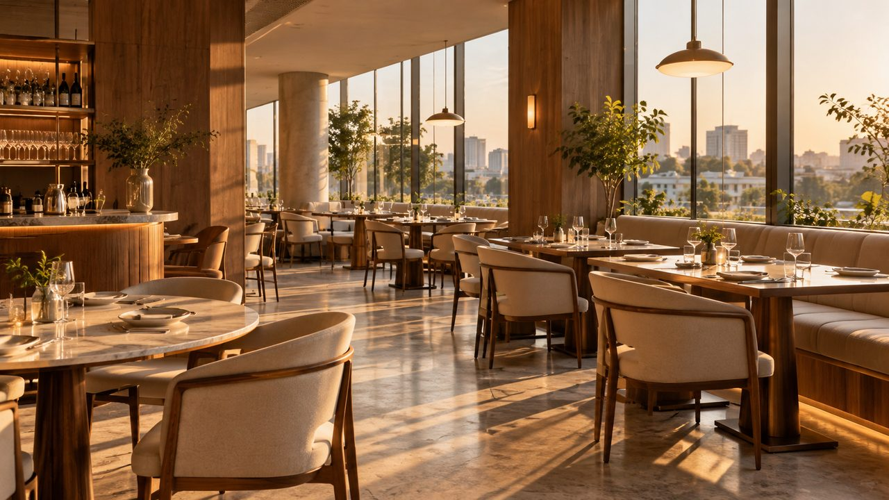
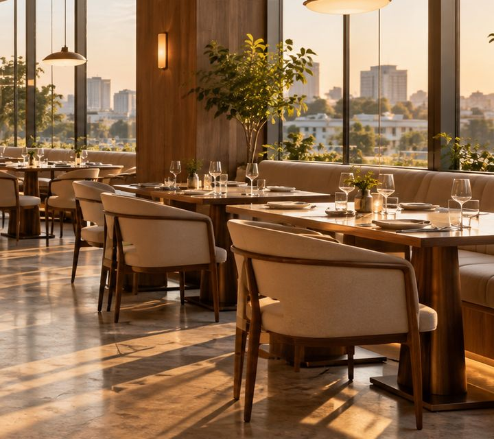

ABOUT US
맛있는 순간을 위한 공간
햇살이 드는 창가 자리부터 조용한 테이블까지. 원하는 자리에서 편안한 시간을 보내세요. 방문 날짜와 인원을 정한 뒤 실제 배치도에서 테이블을 직접 고를 수 있습니다.
창가 테이블단체석조용한 좌석자리 확인
OPEN HOURS
매장 이용 안내
영업시간11:30 – 22:00
브레이크 타임15:00 – 17:00
예약30분 단위 예약 · 좌석 직접 선택
LOCATION
오시는 길
서울 성동구 성수동
위치 안내
상세 위치와 교통편은 매장 정보에서 확인하실 수 있습니다.